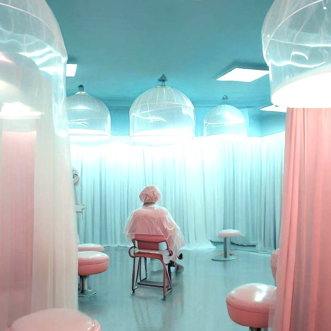

ESTABLISHED 2026 — BRIGHTER DAYS INC.
A better past.
A brighter future.
We founded The Memory Department on a simple conviction: that the limitations of human memory should not determine the quality of a person's life.
01 / WHO WE SERVE
Memory is a deeply personal matter.
There is no single reason a person comes to The Memory Department. For some, it is the fear of forgetting someone they love. For others, it is the difficulty of living with an experience they wish they could forget.
We welcome adults aged 18 and older seeking either to recover significant personal memories or to relinquish recollections that continue to affect their daily lives.
We recognize that an experience of great significance to one person may seem ordinary to another. Our role is not to determine which memories are worth keeping, but to understand what they mean to you.
No one else has lived your life. No one else should decide what you remember.
02 / OUR PHILOSOPHY
The right to remember.
Throughout our lives, we entrust memory with some of our most valuable possessions: the people we have loved, the places we have called home, and the experiences through which we have come to understand ourselves. Yet we have remarkably little control over what remains with us.
We can spend years trying to forget a single afternoon, while the details of an entire childhood gradually disappear without our permission.
At The Memory Department, we question why this should remain beyond our control. Our work is founded on the belief that individuals should have a greater degree of autonomy over their own recollections and, consequently, the lives they lead.
03 / OUR MISSION
A new standard in memory care.
Our mission is to establish memory care as an integral part of individual well-being. Through the continued development of our restoration and remediation procedures, we seek to make the recovery and removal of personal recollections accessible to those who need it.
We are committed to advancing our understanding of memory while providing a private, respectful environment in which patients can make informed decisions about their personal histories.
We believe the quality of a life should not be limited by the circumstances of its past.
04 / OUR PROMISE
Your memories. Our responsibility.
INDIVIDUALIZED CARE
Every patient arrives with a history that is entirely their own. Treatment is developed through private consultation, taking into consideration the patient's circumstances, personal associations, and reasons for seeking care.
PATIENT CONFIDENTIALITY
We recognize the sensitivity of the information entrusted to us. Personal histories, treatment records, and recovered or removed recollections are maintained within our private archival system, with access limited to authorized personnel.
CONTINUITY OF CARE
Our responsibility to our patients extends beyond the procedure itself. From the initial consultation through residential recovery and aftercare, we remain attentive to the patient's adjustment to life following treatment.

THE MEMORY DEPARTMENT / VISUAL ARCHIVE — COLLECTION NO. 002
PRIVATE CONSULTATIONS / PATIENT ENROLLMENT
It begins with a conversation.
You do not need to arrive with a decision already made. Our specialists welcome the opportunity to learn about your circumstances, discuss your options, and answer any questions you may have about treatment.
REQUEST A PRIVATE CONSULTATION ALL CONSULTATIONS ARE CONFIDENTIAL.